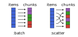

ChunkSplitters.jl
ChunkSplitters.jl facilitates the splitting of a given list of work items (of potentially uneven workload) into chunks that can be readily used for parallel processing. Operations on these chunks can, for example, be parallelized with Julia's multithreading tools, where separate tasks are created for each chunk. Compared to naive parallelization, ChunkSplitters.jl therefore effectively allows for more fine-grained control of the composition and workload of each parallel task.
Working with chunks and their respective indices also improves thread-safety compared to a naive approach based on threadid() indexing (see PSA: Thread-local state is no longer recommended).
Installation
Install with:
julia> import Pkg; Pkg.add("ChunkSplitters")The chunks iterator
The main interface is the chunks iterator:
chunks(array::AbstractArray, nchunks::Int, type::Symbol=:batch)This iterator returns a Tuple{UnitRange,Int} which indicates the range of indices of the input array for each given chunk and the index of the latter. The type parameter is optional. If type == :batch, the ranges are consecutive (default behavior). If type == :scatter, the range is scattered over the array.
The different chunking variants are illustrated in the following figure:

For type=:batch, each chunk is "filled up" with work items one after another such that all chunks hold approximately the same number of work items (as far as possible). For type=:scatter, the work items are assigned to chunks in a round-robin fashion. As shown below, this way of chunking can be beneficial if the workload (i.e. the computational weight) for different items is uneven.
Basic example
Let's first illustrate the chunks returned by chunks for the different chunking variants:
julia> using ChunkSplitters
julia> x = rand(7);
julia> for (xrange,ichunk) in chunks(x, 3, :batch)
@show (xrange, ichunk)
end
(xrange, ichunk) = (1:3, 1)
(xrange, ichunk) = (4:5, 2)
(xrange, ichunk) = (6:7, 3)
julia> for (xrange,ichunk) in chunks(x, 3, :scatter)
@show (xrange, ichunk)
end
(xrange, ichunk) = (1:3:7, 1)
(xrange, ichunk) = (2:3:5, 2)
(xrange, ichunk) = (3:3:6, 3)Now, let's demonstrate how to use chunks in a simple multi-threaded example:
julia> using BenchmarkTools
julia> using ChunkSplitters
julia> function sum_parallel(f, x; nchunks=Threads.nthreads())
t = map(chunks(x, nchunks)) do (idcs, ichunk)
Threads.@spawn sum(f, @view x[idcs])
end
return sum(fetch.(t))
end
julia> x = rand(10^8);
julia> Threads.nthreads()
12
julia> @btime sum(x -> log(x)^7, $x);
1.353 s (0 allocations: 0 bytes)
julia> @btime sum_parallel(x -> log(x)^7, $x; nchunks=Threads.nthreads());
120.429 ms (98 allocations: 7.42 KiB)Of course, chunks can also be used in conjuction with @threads (see below).
Load balancing considerations
We create a very unbalanced workload:
julia> work_load = ceil.(Int, collect(10^3 * exp(-0.002*i) for i in 1:2^11));
julia> using UnicodePlots
julia> lineplot(work_load; xlabel="task", ylabel="workload", xlim=(1,2^11))
┌────────────────────────────────────────┐
1 000 │⣇⠀⠀⠀⠀⠀⠀⠀⠀⠀⠀⠀⠀⠀⠀⠀⠀⠀⠀⠀⠀⠀⠀⠀⠀⠀⠀⠀⠀⠀⠀⠀⠀⠀⠀⠀⠀⠀⠀⠀│
│⠘⡆⠀⠀⠀⠀⠀⠀⠀⠀⠀⠀⠀⠀⠀⠀⠀⠀⠀⠀⠀⠀⠀⠀⠀⠀⠀⠀⠀⠀⠀⠀⠀⠀⠀⠀⠀⠀⠀⠀│
│⠀⢹⡀⠀⠀⠀⠀⠀⠀⠀⠀⠀⠀⠀⠀⠀⠀⠀⠀⠀⠀⠀⠀⠀⠀⠀⠀⠀⠀⠀⠀⠀⠀⠀⠀⠀⠀⠀⠀⠀│
│⠀⠀⢳⡀⠀⠀⠀⠀⠀⠀⠀⠀⠀⠀⠀⠀⠀⠀⠀⠀⠀⠀⠀⠀⠀⠀⠀⠀⠀⠀⠀⠀⠀⠀⠀⠀⠀⠀⠀⠀│
│⠀⠀⠀⢧⠀⠀⠀⠀⠀⠀⠀⠀⠀⠀⠀⠀⠀⠀⠀⠀⠀⠀⠀⠀⠀⠀⠀⠀⠀⠀⠀⠀⠀⠀⠀⠀⠀⠀⠀⠀│
│⠀⠀⠀⠈⢧⠀⠀⠀⠀⠀⠀⠀⠀⠀⠀⠀⠀⠀⠀⠀⠀⠀⠀⠀⠀⠀⠀⠀⠀⠀⠀⠀⠀⠀⠀⠀⠀⠀⠀⠀│
│⠀⠀⠀⠀⠈⢳⡀⠀⠀⠀⠀⠀⠀⠀⠀⠀⠀⠀⠀⠀⠀⠀⠀⠀⠀⠀⠀⠀⠀⠀⠀⠀⠀⠀⠀⠀⠀⠀⠀⠀│
workload │⠀⠀⠀⠀⠀⠀⠳⡄⠀⠀⠀⠀⠀⠀⠀⠀⠀⠀⠀⠀⠀⠀⠀⠀⠀⠀⠀⠀⠀⠀⠀⠀⠀⠀⠀⠀⠀⠀⠀⠀│
│⠀⠀⠀⠀⠀⠀⠀⠙⢦⠀⠀⠀⠀⠀⠀⠀⠀⠀⠀⠀⠀⠀⠀⠀⠀⠀⠀⠀⠀⠀⠀⠀⠀⠀⠀⠀⠀⠀⠀⠀│
│⠀⠀⠀⠀⠀⠀⠀⠀⠈⠳⣄⠀⠀⠀⠀⠀⠀⠀⠀⠀⠀⠀⠀⠀⠀⠀⠀⠀⠀⠀⠀⠀⠀⠀⠀⠀⠀⠀⠀⠀│
│⠀⠀⠀⠀⠀⠀⠀⠀⠀⠀⠈⠳⣄⠀⠀⠀⠀⠀⠀⠀⠀⠀⠀⠀⠀⠀⠀⠀⠀⠀⠀⠀⠀⠀⠀⠀⠀⠀⠀⠀│
│⠀⠀⠀⠀⠀⠀⠀⠀⠀⠀⠀⠀⠈⠙⢦⣀⠀⠀⠀⠀⠀⠀⠀⠀⠀⠀⠀⠀⠀⠀⠀⠀⠀⠀⠀⠀⠀⠀⠀⠀│
│⠀⠀⠀⠀⠀⠀⠀⠀⠀⠀⠀⠀⠀⠀⠀⠈⠙⠲⢤⣀⠀⠀⠀⠀⠀⠀⠀⠀⠀⠀⠀⠀⠀⠀⠀⠀⠀⠀⠀⠀│
│⠀⠀⠀⠀⠀⠀⠀⠀⠀⠀⠀⠀⠀⠀⠀⠀⠀⠀⠀⠈⠉⠓⠦⠤⣄⣀⣀⠀⠀⠀⠀⠀⠀⠀⠀⠀⠀⠀⠀⠀│
0 │⠀⠀⠀⠀⠀⠀⠀⠀⠀⠀⠀⠀⠀⠀⠀⠀⠀⠀⠀⠀⠀⠀⠀⠀⠀⠀⠈⠉⠉⠓⠒⠒⠒⠦⠤⠤⠤⠤⠤⠤│
└────────────────────────────────────────┘
⠀1⠀⠀⠀⠀⠀⠀⠀⠀⠀⠀⠀⠀⠀⠀⠀⠀⠀⠀⠀⠀⠀⠀⠀⠀⠀⠀⠀⠀⠀⠀⠀⠀⠀⠀2 048⠀
⠀⠀⠀⠀⠀⠀⠀⠀⠀⠀⠀⠀⠀⠀⠀⠀⠀⠀⠀task⠀⠀⠀⠀⠀⠀⠀⠀⠀⠀⠀⠀⠀⠀⠀⠀⠀⠀⠀ The scenario that we will consider below is the following: We want to parallize the operation sum(y -> log(y)^7, x), where x is a regular array. However, to establish the uneven workload shown above, we will make each task sum up a different number of elements of x, specifically as many elements as is indicated by the work_load array for the given task/work item.
For parallelization, we will use @spawn and @threads, which, respectively, does and doesn't implement load balancing. We'll test those in conjuction with the chunking variants :batch and :scatter described above.
Using @threads
First, we consider a variant where the @threads macro is used. The multithreaded operation is:
julia> using Base.Threads, ChunkSplitters
julia> function uneven_workload_threads(x, work_load; nchunks::Int, chunk_type::Symbol)
chunk_sums = Vector{eltype(x)}(undef, nchunks)
@threads for (idcs, ichunk) in chunks(work_load, nchunks, chunk_type)
local s = zero(eltype(x))
for i in idcs
s += sum(j -> log(x[j])^7, 1:work_load[i])
end
chunk_sums[ichunk] = s
end
return sum(chunk_sums)
endUsing nchunks == Thread.nthreads() == 12, we get the following timings:
julia> using BenchmarkTools
julia> @btime uneven_workload_threads($x, $work_load; nchunks=nthreads(), chunk_type=:batch)
2.030 ms (71 allocations: 7.06 KiB)
julia> @btime uneven_workload_threads($x, $work_load; nchunks=nthreads(), chunk_type=:scatter)
587.309 μs (70 allocations: 7.03 KiB)Note that despite the fact that @threads doesn't balance load internally, one can get "poor man's load balancing" by using :scatter instead of :batch. This is due to the fact that for :scatter we create chunks by sampling from the entire workload: chunks will consist of work items with vastly different computational weight. In contrast, for :batch, the first couple of chunks will have high workload and the latter ones very low workload.
For @threads, increasing nchunks beyond nthreads() typically isn't helpful. This is because it will anyways always create O(nthreads()) tasks (i.e. a fixed number), grouping up multiple of our chunks if necessary.
julia> @btime uneven_workload_threads($x, $work_load; nchunks=8*nthreads(), chunk_type=:batch);
2.081 ms (74 allocations: 7.88 KiB)
julia> @btime uneven_workload_threads($x, $work_load; nchunks=8*nthreads(), chunk_type=:scatter);
632.149 μs (75 allocations: 7.91 KiB)Using @spawn
We can use @spawn to get "proper" load balancing through Julia's task scheduler. The spawned tasks, each associated with a chunk of the work_load array, will be dynamically scheduled at runtime. If there are enough tasks/chunks, the scheduler can map them to Julia threads in such a way that the overall workload per Julia thread is balanced.
Here is the implementation that we'll consider.
julia> function uneven_workload_spawn(x, work_load; nchunks::Int, chunk_type::Symbol)
ts = map(chunks(work_load, nchunks, chunk_type)) do (idcs, ichunk)
@spawn begin
local s = zero(eltype(x))
for i in idcs
s += sum(log(x[j])^7 for j in 1:work_load[i])
end
s
end
end
return sum(fetch.(ts))
endFor nchunks == Thread.nthreads() == 12, we expect to see similar performance as for the @threads variant above, because we're creating the same (number of) chunks/tasks.
julia> @btime uneven_workload_spawn($x, $work_load; nchunks=nthreads(), chunk_type=:batch);
1.997 ms (93 allocations: 7.30 KiB)
julia> @btime uneven_workload_spawn($x, $work_load; nchunks=nthreads(), chunk_type=:scatter);
573.399 μs (91 allocations: 7.23 KiB)However, by increasing nchunks > nthreads() we can give the dynamic scheduler more tasks ("units of work") to balance out and improve the load balancing. In this case, the difference between :batch and :scatter chunking becomes negligible.
julia> @btime uneven_workload_spawn($x, $work_load; nchunks=8*nthreads(), chunk_type=:batch);
603.830 μs (597 allocations: 53.30 KiB)
julia> @btime uneven_workload_spawn($x, $work_load; nchunks=8*nthreads(), chunk_type=:scatter);
601.519 μs (597 allocations: 53.30 KiB)Lower-level getchunk function
The package also provides a lower-level getchunk function:
getchunk(array::AbstractArray, ichunk::Int, nchunks::Int, type::Symbol=:batch)that returns the range of indexes corresponding to the work items in the input array that are associated with chunk number ichunk.
For example, if we have an array of 7 elements, and the work on the elements is divided into 3 chunks, we have (using the default type = :batch option):
julia> using ChunkSplitters
julia> x = rand(7);
julia> getchunk(x, 1, 3)
1:3
julia> getchunk(x, 2, 3)
4:5
julia> getchunk(x, 3, 3)
6:7And using type = :scatter, we have:
julia> getchunk(x, 1, 3, :scatter)
1:3:7
julia> getchunk(x, 2, 3, :scatter)
2:3:5
julia> getchunk(x, 3, 3, :scatter)
3:3:6Example: getchunk usage
julia> using BenchmarkTools
julia> using ChunkSplitters
julia> function sum_parallel_getchunk(f, x; nchunks=Threads.nthreads())
t = map(1:nchunks) do ichunk
Threads.@spawn begin
local idcs = getchunk(x, ichunk, nchunks)
sum(f, @view x[idcs])
end
end
return sum(fetch.(t))
end
julia> x = rand(10^8);
julia> Threads.nthreads()
12
julia> @btime sum(x -> log(x)^7, $x);
1.363 s (0 allocations: 0 bytes)
julia> @btime sum_parallel_getchunk(x -> log(x)^7, $x; nchunks=Threads.nthreads());
121.651 ms (100 allocations: 7.31 KiB)